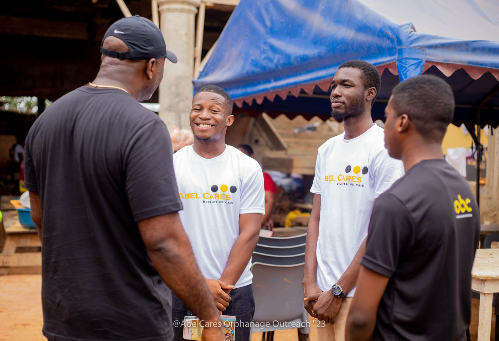

Fueling Grassroots Transformation with Complete Transparency
Direct financial support sustains community psychoeducation dialogues, neurodiversity classroom accommodations, and peer mentorship clubs across Ghana.
ACI Africa records public financial support as confirmed pledges. Our finance office in Accra personally validates each contribution and communicates official banking and wire protocols.

Register a Support Pledge
Specify your intended contribution. Our secretariat will register your pledge and provide official bank transfer information.
Bilateral MoUs & Grantmaking
For international philanthropic foundations, development funds, corporate ESG programs, and academic research institutions.
Programmatic MoUs
Tailored multi-year program agreements aligned with institutional grant cycles, measurable M&E benchmarks, and structured milestone disbursements.
Independent Program Audits
All institutional partnerships provide transparent audit statements and direct site-inspection access for accredited monitoring teams in Ghana.
Direct Executive Inquiry
Connect directly with our governance council in Accra via info@aciafrica.org.